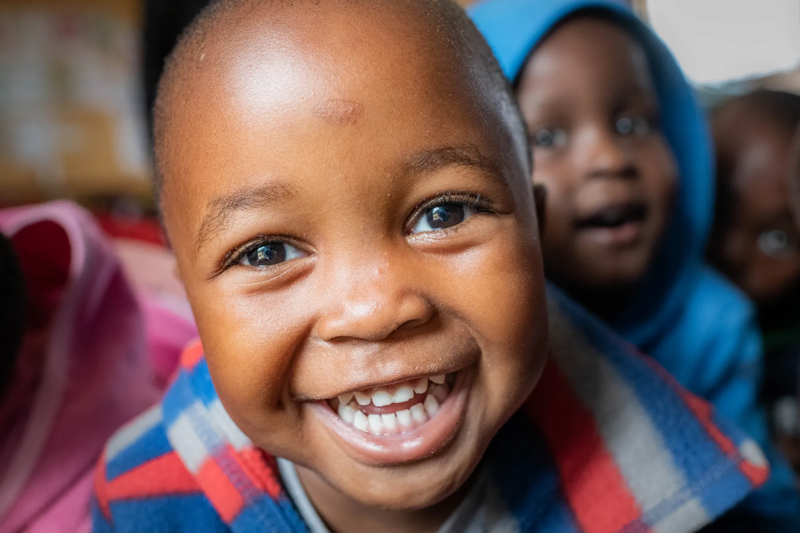
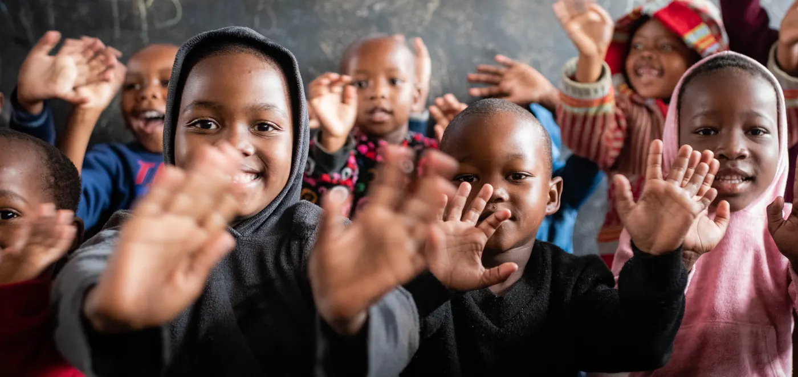
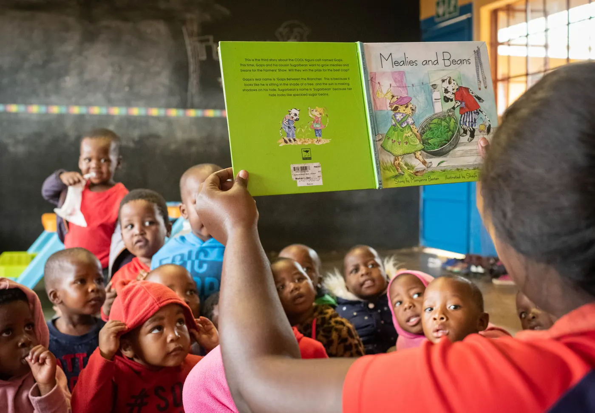
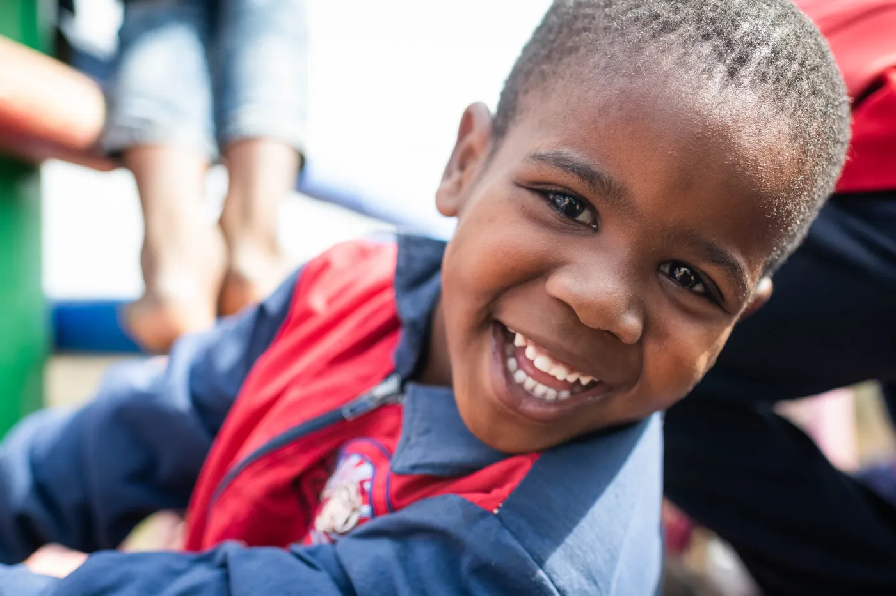
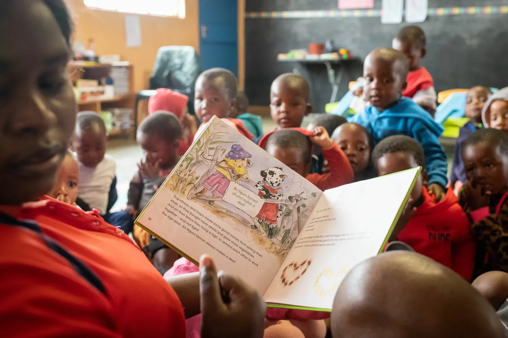
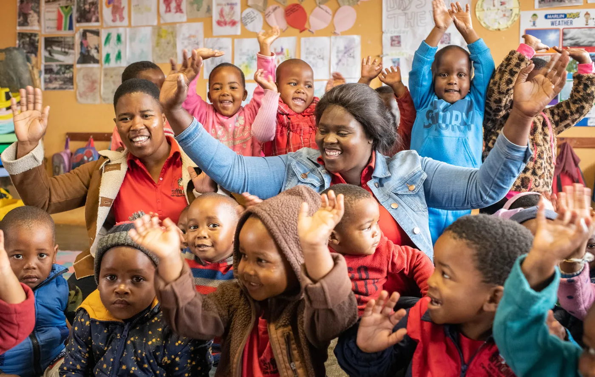
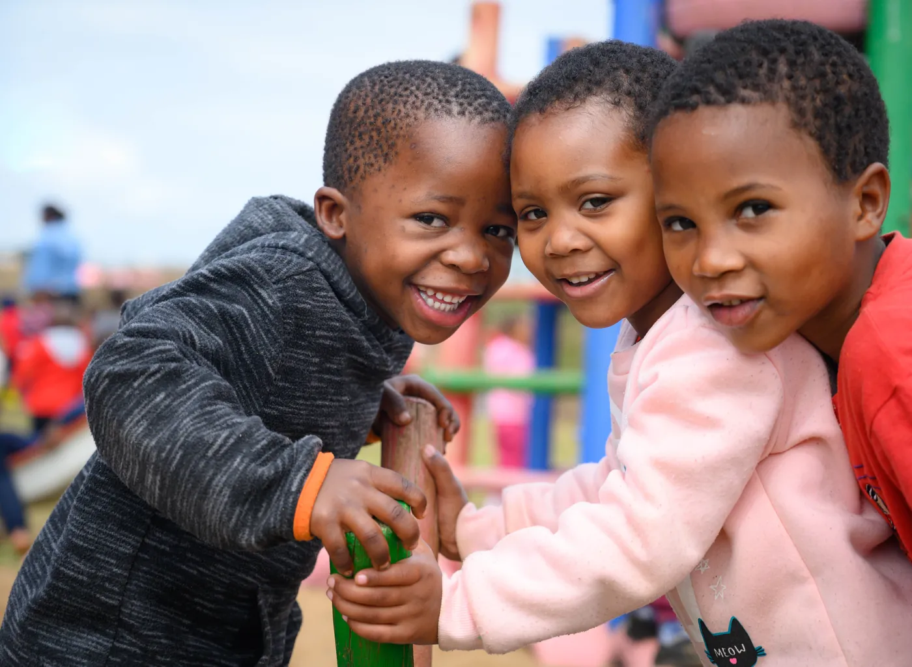
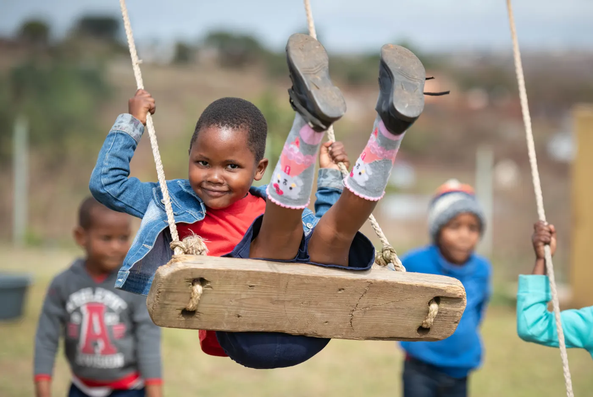

01
Early Learning and Development
Children aged 2–6
Educators track each child's developmental milestones. They use play, stimulation and life-skills activities to support the child's emotional growth, confidence and early learning.

A community-led early childhood development centre for children aged 2 to 6 in rural Nqgopheni, northern KwaZulu‑Natal.
879
young children educated since 2011
10
local staff employed in 2025
4
classrooms, grown from one tiny classroom since 2011
About this partner
Siyabonga is a community-led early childhood development centre in rural Nqgopheni, northern KwaZulu-Natal. It gives children aged 2 to 6 early learning and nutritious meals from its own garden, and supports their families.
Local leaders in Nqgopheni started Siyabonga in 2011. Our community sits in a former apartheid-era homeland, with very few programmes for young children. The leaders saw a growing number of vulnerable children with nowhere to learn but had no resources to respond. They asked Thembanathi, a nonprofit working nearly 100 km away, to help them begin, and Siyabonga registered as a nonprofit in 2012. We started with one tiny classroom and have grown to four large classrooms, a playground and a garden that regularly feeds the children. Every member of our staff, from teachers to cooks, comes from our community.
Today Siyabonga cares for children aged 2 to 6 across four classrooms. We offer early stimulation and emotional development, school readiness and life skills, health and hygiene routines, and nutritious meals with vegetables from our own garden. We also support guardians, including counselling for young mothers, some of whom are still at high school. Our ten local staff include four full-time ECD educators, and every staff member and volunteer is screened against the National Child Protection Register.







01
Children aged 2–6
Educators track each child's developmental milestones. They use play, stimulation and life-skills activities to support the child's emotional growth, confidence and early learning.
02
Older children preparing for primary school
Children work in small teams on activities that prepare them for the move to primary school, so they graduate from Siyabonga ready for the next grade.
03
All children at the centre
Children receive nutritious meals with vegetables from the centre's own garden. They also learn hygiene routines that keep them, and the centre, clean and healthy.
04
Young, at-risk mothers
Siyabonga offers counselling and support to young mothers of children at the centre, some of whom are still completing high school themselves.
Even Ground has supported Siyabonga, together with Thembanathi, for nine years. Its funding contributes to our core ECD programme. It covers the salaries of the educators and staff who keep children safe and learning, as well as transport and governance costs.
A story from Siyabonga

In Mtubatuba, KwaZulu-Natal, thoughtful entrepreneur Msizi Buthelezi is one of many parents whose children's curiosity have been embraced and strengthened through Siyabonga Early Childhood Development Center. Since his first visit at the center, he found dedicated teachers and a supportive environment that helped his daughter and son build a strong early learning foundation. Grateful for the care his family received, he now contributes his time, construction support, and materials to help maintain and improve the center.
Support Even Ground
Donations are made to Even Ground and help fund community-led programs like Siyabonga's across South Africa. Even Ground is a US 501(c)(3); contributions are tax-deductible.